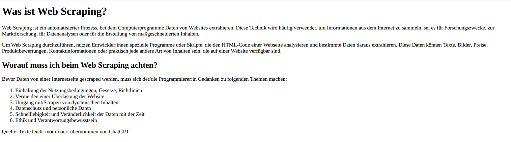

Zusatzübungen zum Notebook „Web Scraping“#
👆 Beim Web Scraping (konkret: beim Extrahieren der Daten) wird zumeist mit regulären Ausdrücken gearbeitet. Dabei gibt es oft verschiedene Möglichkeiten, einen Suchausdruck zu konstruieren. Bei der Abwägung zwischen Genauigkeit (decke ich alle gewünschten Fälle und nur diese ab?) und Effizienz (wie lange brauche ich, um den regulären Ausdruck zu konstruieren?) gibt es nicht immer Richtig und Falsch.
Es ist kein Problem, falls Du noch keine Erfahrung mit regulären Ausdrücken hast, denn alle Aufgaben sind auch ohne dieses Wissen lösbar.
Der in der Code-Zelle gegebene HTML-Code soll folgende Ausgabe erzeugen:

Aktuell fehlen im
<body>-Element noch einige Tags. Überleg Dir mithilfe des Bildes, welche das sein könnten und an welchen Stellen sie fehlen. Ergänz sie in den bereits gegebenen<>. Du kannst Dir den vervollständigten Code z. B. auf dieser Website als PDF anzeigen lassen, um ihn mit dem Screenshot abzugleichen.💡 Tipp
Es fehlen die Tags für die Überschriften, Texte und die geordnete Liste. Wenn Du Dir unsicher bist, wie diese geschrieben werden, schau nochmal im Notebook "Web Scraping Teil 1" nach.
Die Website manova.news (ehemals Rubikon, siehe Wikipedia-Eintrag) versteht sich als Nachrichtenportal, verbreitet aber häufig Verschwörungstheorien. Wir wollen die Sprache der Webseite genauer unter die Lupe nehmen. Dazu konzentrieren wir uns zunächst auf Schlagzeilen bzw. Überschriften in der Rubrik Natur und Mitwelt.
Verschaff Dir einen Überblick über die Seite und überleg Dir, worauf Du beim Scraping aller Schlagzeilen bzw. Überschriften in dieser Rubrik achten musst. Schau dazu im Quelltext nach. Notier Deine Antwort in der folgenden Code-Zelle.
Halt außerdem stichpunktartig fest, wie Du beim Abruf- und Extraktionsschritt vorgehen willst.
'''Worauf muss geachtet werden?
'''
'''Vorgehen beim Scraping und Extrahieren:
1.
2.
3.
'''
'Vorgehen beim Scraping und Extrahieren:\n1. \n2. \n3. \n\n'
Ruf nun die Seitenquelltexte der gegebenen Rubrik ab und speicher sie in einer Liste. Verwend hier wenn möglich einen regulären Ausdruck. Lass Dir anschließend in der zweiten Code-Zelle zur Kontrolle die ersten 1000 Zeichen des ersten Quelltexts ausgeben.
💡 Tipp für die Umsetzung ohne reguläre Ausdrücke
Die Nutzung eines f-strings in Verbindung mit einer Schleife sowie einer Zählvariablen bietet sich an, um nacheinander alle Seiten zu scrapen.
#Abrufschritt
#Ausgabe der ersten 1000 Zeichen des ersten Quelltexts
Extrahier nun alle Schlagzeilen bzw. Überschriften der angeteaserten Artikel und lass sie Dir ausgeben.
💡 Tipp
Nutz dazuBeautifulSoupin Verbindung mit der Methodefind_all.
Da Web Scraping die angerufenen Server immer belastet, sollten wir so selten wie möglich Inhalte herunterladen. Wenn wir mehrfach die gleichen Daten für ein größeres Projekt benötigen, sollten wir sie nur einmal herunterladen und anschließend lokal speichern.
Die Quelltexte der manova-Seiten sind momentan nur in unserem Arbeitsspeicher (in der Variablen
all_pages). Sobald wir diese Sitzung (also den Kernel) beenden, gehen sie verloren. Um auch in der nächsten Sitzung mit den Daten arbeiten zu können (ohne sie erneut vom Server herunterladen zu müssen), ist es nun Deine Aufgabe, jeden Quelltext in einem separaten HTML-Dokument zu speichern. Wähl als Speicherort das Verzeichnis „3_Dateien/Output“.Überprüf abschließend über Deinen Dateimanager, ob die neuen Dateien existieren sowie sinnvoll beschrieben wurden.
💡 Tipp
Zum externen Speichern von Daten gibt es bei Python verschiedene Wege. Einige hast Du bereits im zweiteiligen Notebook "Input und Output" kennengelernt. Du kannst aber auch selbst im Internet suchen, wie Du die Quelltexte am besten speicherst.
Nun wollen wir mit den soeben lokal gespeicherten HTML-Dokumenten weiterarbeiten. Lies sie nacheinander ein und extrahier bei jedem angeteaserten Artikel das zugehörige Schlagwort. Beim Artikel im Screenshot unten wäre dies „#WASSERSPEZIAL“ (andere Schlagworte beginnen nicht mit einem Hashtag).

Ermittle, wie häufig jedes Schlagwort auf den gescrapten Seiten zum Einsatz kommt. Lass Dir das Ergebnis in absteigender Reihenfolge ausgeben.
Stell analog zu Übung 6 eine Übersicht über die fleißigsten Autor:innen in dieser Rubrik zusammen. Lass Dir die Namen derer ausgeben, die mehr als einen Artikel verfasst haben.
Bislang haben wir nur die Überblicksseiten der Rubrik „Natur und Mitwelt“ gescrapt. Nun wollen wir die eigentlichen Artikeltexte scrapen und daraus ein eigenes Korpus erstellen.
Extrahier dazu zunächst alle Links auf den Überblicksseiten, die zu den eigentlichen Artikeln führen. Speichere die vollständigen Links in einer Liste.
Lade für unser Korpus in der ersten Code-Zelle den Quelltext sämtlicher Artikel, deren Links Du eben zusammengetragen hast, herunter. Da wir die relevanten Teile davon gleich lokal speichern werden, kannst Du die Quelltexte zwischenzeitlich in Deinem Arbeitsspeicher belassen.
Extrahier anschließend in der zweiten Code-Zelle aus jedem Quelltext den Haupttext des Artikels. Speichere alle Texte in einer XML-Datei im Ordner „3_Dateien/Output“. Das XML-Dokument wird unserem Korpus entsprechen. Leg dessen hierarchische Struktur so an, dass die Artikeltexte voneinander unterschieden werden können.
💡 Tipp 1
Verwendtrafilaturasowohl für den Abruf- als auch für den Extraktionsschritt. Das Modul eignet sich in diesem Fall, da wir nur am Haupttext interessiert sind.
💡 Tipp 2
Um die Fortschrittsanzeige, die wir etwa in der Lösung zu Übung 3 verwendet haben, zu professionalisieren, kannst Du das Modultqdmüber die Command Line installieren. Importiere es anschließend mithilfe vonfrom tqdm import tqdmund bau es wie folgt in diefor-Schleife zur Iteration überlinksein:for i in tqdm(range(len(links))). Dierange-Funktion benutzen wir auch hier, um einen Zähler für die Dateibenennung zu erhalten.
📌 Herausforderung
Extrahier nicht nur den Haupttext aller Artikel, sondern ebenfalls den Namen des/der Autor:in, den Titel, das Publikationsdatum sowie weitere Metadaten, die Dich interessieren. Um diese Elemente gezielt extrahieren zu können, musst Du die Quelltexte mitrequestsabrufen und mitBeautifulSoupparsen. Speicher die Metadaten an geeigneter Stelle in der Hierarchie Deines XML-Dokuments. Nutz dafür beispielsweise Attribute. Für diese Herausforderung wird keine Lösung vorgegeben.
#Abrufschritt
#Extraktions- und Speicherschritt
Auch wenn es beim Web Scraping nur um die Datenbeschaffung geht, so bietet folgender vorgegebener Code einen Einblick in die Datenauswertung, die möglich ist, jetzt wo wir unser eigenes Korpus zusammengestellt haben. Der Code lässt sich ausführen, wenn Du die XML-Elemente gleich genannt hast, wie in der Lösung vorgeschlagen. Du kannst ihn natürlich an Deine Namensgebung anpassen.
Wir verwenden das im Notebook „Funktionen und Methoden Teil 2“ erstellte Modul
keywordsbzw. die Funktionget_freqsdaraus. Diese haben wir ja geschrieben, um die Häufigkeit von Wörtern zu berechnen. Da wir es nun mit einer viel größeren Datenmenge zu tun haben, läuft der Code eine Weile. Bau gerne eine Fortschrittsanzeige mittqdmin den Modulcode ein, um die Ausführung im Blick behalten zu können. Bedenk aber, dass Du nach dem Ändern des Modulcodes den Kernel neustarten musst, um das Modul mit dem geänderten Code zu importieren.Behalt auch im Hinterkopf, dass wir diesen Code in einem früheren Stadium unserer Programmierkarriere geschrieben haben. Mittlerweile kennen wir vermutlich effizientere Wege, um Wörter auszuzählen. Ungeachtet dessen offenbart sich hier (einmal mehr) der Vorteil von Code Reuse und konkret von Modularisierung, wie er im zweiteiligen Notebook „Funktionen und Methoden“ aufgezeigt wurde.
#Einlesen des eben erstellen XML-Dokuments
tree = ET.parse("../3_Dateien/Output/manova_corpus.xml")
root = tree.getroot()
text = "" #Initialisieren eines leeren strings, an den wir unten die Artikeltexte hängen
#Iteration (rekursiv!) über alle <p>-Elemente und Anhängen des Textinhalts an 'text'
for paragraph in root.iter("p"):
text += paragraph.text
#Einlesen der Stoppwörter, die wir auch im Notebook "Funktionen und Methoden Teil 2" benutzt haben
stopwords_list = []
with open("../3_Dateien/Koalitionsvertraege/stopwords-de.txt", encoding="utf-8") as h:
for line in h:
stopwords_list.append(line.rstrip())
#Hinzufügen eines Verzeichnis, in dem Python nach Modulen sucht
import sys
sys.path.append("../3_Dateien/Module")
#Importieren der Funktion 'get_freqs'
from keywords import get_freqs
#Berechnen der Worthäufigkeiten
word_frequencies = get_freqs(text, stopwords_list)
#Ausgabe der zehn häufigsten Wörter
print("Die zehn häufigsten Wörter (exkl. Stoppwörter) sind...")
for word, frequency in word_frequencies[0:10]:
print(word, "kommt", frequency, "vor.")
---------------------------------------------------------------------------
NameError Traceback (most recent call last)
Cell In[6], line 2
1 #Einlesen des eben erstellen XML-Dokuments
----> 2 tree = ET.parse("../3_Dateien/Output/manova_corpus.xml")
3 root = tree.getroot()
5 text = "" #Initialisieren eines leeren strings, an den wir unten die Artikeltexte hängen
NameError: name 'ET' is not defined

|
Dieses Notebook sowie sämtliche weiteren Materialien zum Programmierenlernen für Geistes- und Sozialwissenschaftler:innen sind im Rahmen des Projekts Experimentierraum Digitale Medienkompetenz als Teil von virTUos entstanden. Erstellt wurden sie von Anne Josephine Matz und Yannick Frommherz. Sie stehen als Open Educational Resource nach CC BY SA zur freien Verfügung. Für Feedback und bei Fragen nutz bitte das Kontaktformular. |